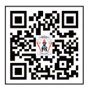

Utangulizi
Kitabu hiki cha Kuhesabu kimetayarishwa kwa kuzingatia Mtaala na Muhtasari wa Elimu ya Msingi wa Mwaka 2023 uliotolewa na Wizara ya Elimu, Sayansi na Teknolojia. Kitabu hiki ni Toleo la Pili kilichoboreshwa kutoka kitabu cha Kuhesabu kilichochapishwa mwaka 2018 kwa kuzingatia Mtaala wa Mwaka 2016. Lengo la Kitabu hiki ni kumwezesha mwanafunzi kujenga umahiri wa kuhesabu kupitia shughuli mbalimbali za ujifunzaji katika maeneo yafuatayo:
1. Kumudu misingi ya kuhesabu
2. Kumudu stadi za kuhesabu
3. Kutumia kanuni za kuhesabu
Jifunze zaidi kupitia maktaba mtandao https://ol.tie.go.tz/videos

Taasisi ya Elimu Tanzania
Kuhesabu Std 2 SEPT 2024.indd 6